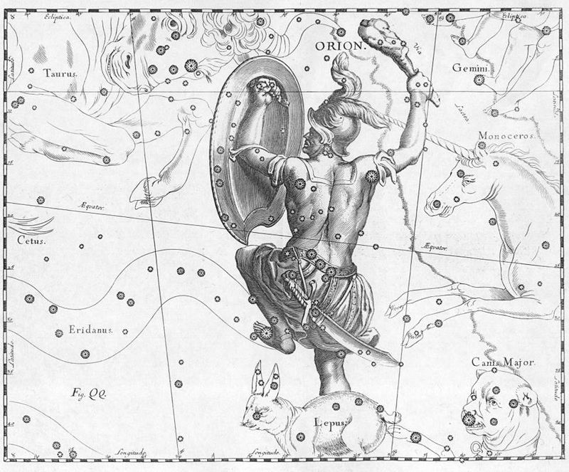

Twinkling, also called scintillation, is a generic term for variations in apparent brightness, colour, or position of a distant luminous object viewed through a medium. If the object lies outside the Earth's atmosphere, as in the case of stars and planets, the phenomenon is termed astronomical scintillation; for objects within the atmosphere, the phenomenon is termed terrestrial scintillation.As one of the three principal factors governing astronomical seeing (the others being light pollution and cloud cover), atmospheric scintillation is defined as variations in illuminance only.
In simple terms, twinkling of stars is caused by the passing of light through different layers of a turbulent atmosphere. Most scintillation effects are caused by anomalous atmospheric refraction caused by small-scale fluctuations in air density usually related to temperature gradients.Scintillation effects are always much more pronounced near the horizon than near the zenith (directly overhead), since light rays near the horizon must penetrate a denser layer of and have longer paths through the atmosphere before reaching the observer. Atmospheric twinkling is measured quantitatively using a scintillometer.The effects of twinkling are reduced by using a larger receiver aperture; this effect is known as aperture averaging.
A constellation is an area on the celestial sphere in which a group of visible stars forms a perceived pattern or outline, typically representing an animal, mythological subject, or inanimate object.
The origins of the earliest constellations likely go back to prehistory. People used them to relate stories of their beliefs, experiences, creation, or mythology. Different cultures and countries adopted their own constellations, some of which lasted into the early 20th century before today's constellations were internationally recognized. The recognition of constellations has changed significantly over time. Many changed in size or shape. Some became popular, only to drop into obscurity. Some were limited to a single culture or nation. Naming constellations also helped astronomers and navigators identify stars more easily.
| Name of Constellations | Total no of Stars |
| Orion | 88 |
| Ursa Mjaor | 100 |
| Cassiopeia | 58 |
| Leo | 101 |
Here are some questions releated our above topic stars.